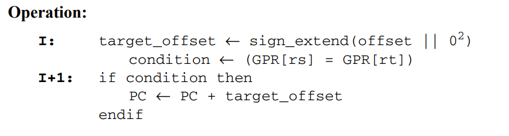
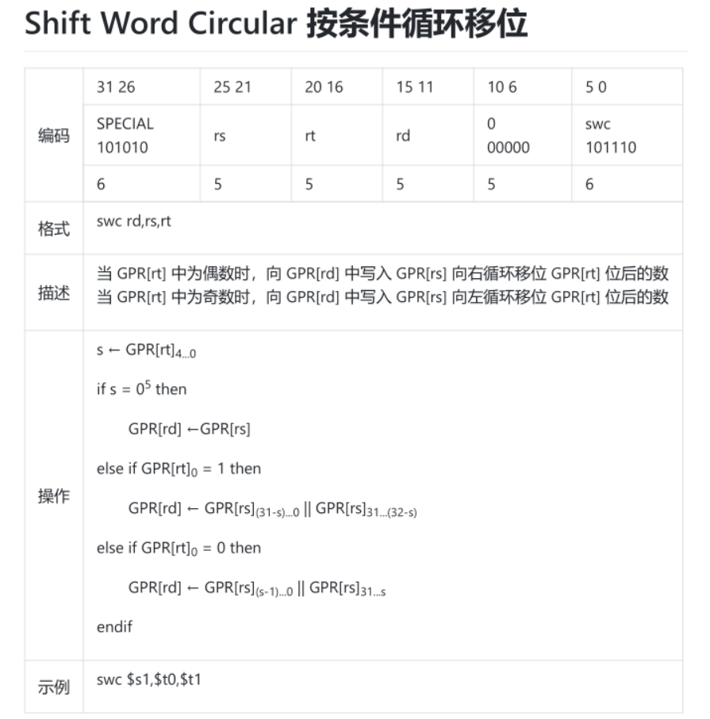
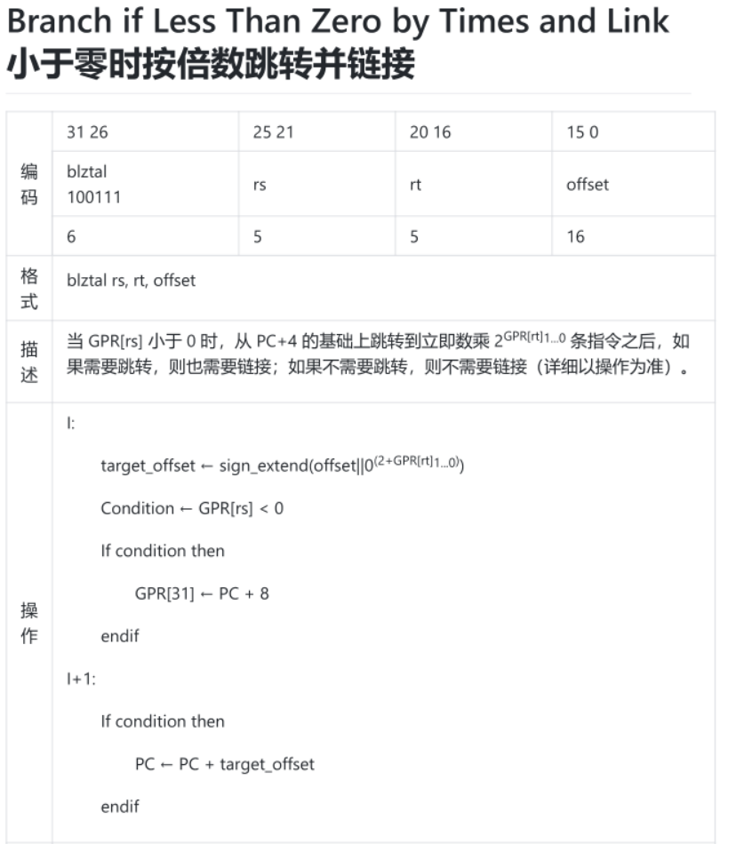
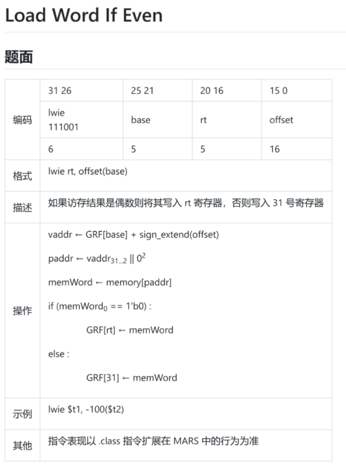
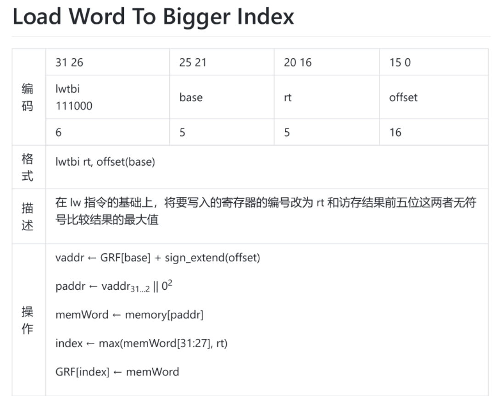

流水线设计与添加指令经验总结
这是一篇针对计组P5,P6的流水线搭建和课上添加指令的经验总结
写在开头
虽然这么说有搞心态的嫌疑x，但笔者认为，P5是计组难度的分水岭，难度同时体现在课下和课上当中，课下CPU做不好，做出Bug,课上强测也过不去，而且课上加指令本来就比较难做，所以被P5卡一两回也是理所应当的，同时，P5和P6同作为流水线的开发，课上指令将具有极大的相似性，因此笔者认为，开一篇博客来分享一下笔者P5,P6流水线搭建和课上添加指令是必要的，话不多说，Here We Go!
预留扩展空间
如果大家是以顺利通过P3,P4的身份来看这一篇文章的，大家就会明白，一个好的架构对于课上的帮助将有多么巨大，特别是针对于P5,P6这种千行级代码的开发，笔者这里主要说一下扩展空间的事情。
MUX的非模块化
很多人在P4，包括我会这样模块化写MUX：1
2
3
4
5
6
7
8
9
10
11
12
13
14
15
16
17
18
19
20
21
22
23
24
25
26
27
28
29
30
31
32
33
34
35module MUX_4_32(
input [31:0] data0,
input [31:0] data1,
input [31:0] data2,
input [31:0] data3,
input [1:0] sel,
output [31:0] out
);
assign out = (sel==2'b00) ? data0 :
(sel==2'b01) ? data1 :
(sel==2'b10) ? data2 : data3;
endmodule
module MUX_4_5(
input [4:0] data0,
input [4:0] data1,
input [4:0] data2,
input [4:0] data3,
input [1:0] sel,
output [4:0] out
);
assign out = (sel==2'b00) ? data0 :
(sel==2'b01) ? data1 :
(sel==2'b10) ? data2 : data3;
endmodule
module MUX_2_32(
input [31:0] data0,
input [31:0] data1,
input sel,
output [31:0] out
);
assign out = (sel==2'b00) ? data0 : data1;
endmodule
之后在DataPath里面将这些模块连起来就好，确实，这样做十分的直观，就是对P3CPU的一个翻译，但对于扩展是极为不友好的，输入位数，输入个数这两个里面有一个变了，就要写一个新的MUX，那么在上机中，我们的时间就会被浪费，因此，笔者认为应直接在DataPath中采用这样的写法：1
2
3
4
5
6
7
8//MEM_ToReg
wire [31:0] E_MemToReg = (E_MemToReg_sign == 1) ? 32'd0 :
(E_MemToReg_sign == 2) ? EX_PC + 8 : 32'd0;
wire [31:0] M_MemToReg = (M_MemToReg_sign == 1) ? 32'd0 :
(M_MemToReg_sign == 2) ? MEM_PC + 8 : MEM_ALU_Result;
wire [31:0] W_MemToReg = (W_MemToReg_sign == 1) ? WB_DM_RD :
(W_MemToReg_sign == 2) ? WB_PC + 8 : WB_ALU_Result;
//MEM_ToReg
这样的写法或许不如前面那种模块化写法理解直观，但这样写的好处就是，扩展十分的方便，只需在三目运算符中再次添加条件即可，是绝对快于添加MUX然后再连线的。
删除转发模块
有一种东西叫全力转发，这个已经是被证明是理论正确的了，如果想了解更多可以看一下这位学长的博客(https://thysrael.github.io/posts/59164957/)
采用全力转发将无需转发模块（Forward）的存在，可以减轻在课上加指令时还需要考虑转发的负担，只需考虑阻塞即可。
细心的小伙伴可以发现，笔者并没有采用全力转发的思路，这是因为笔者在一开始认为这种全力转发会导致一些特殊指令的难以添加，所以不敢以身试险，做了一个保守决策，但笔者一学期下来并没有遇到这种特殊指令，所以大家应该是可以放心使用的。
解读指令集描述
I和I+1
原文如下：
大意是讲，I和I+1分类的标准在于效果生效的时间，I表示I内的内容效果在本条指令生效，I+1则表示I+1内的内容效果在下一条指令生效。
Tips:这里的下一条指的是正常顺序执行的下一条指令，而且I+1与下一条指令生效的先后顺序不会影响结果。
其实看到这里，有聪明的小伙伴就可以看出，I+1这种东西，大概率是和延迟槽挂钩的，如果不存在延迟槽，就不会存在本条指令的执行效果在下一条指令生效的情况。举个例子：Beq这条指令，STL描述如下：

它的PC<-PC+target是在I+1中的，想一想为什么会这样？
假如PC<-PC+target在I中，那么在本条指令中，PC值就已经跳转，那么下一条指令就已经执行的是跳转后的指令了，延迟槽消失了！
假如PC<-PC+target在I+1中，在执行下一条指令时才改变PC的值，延迟槽是不是就出现了？
现在，大家明白了I和I+1的区别了吗？进而，大家明白I+n和I-n的含义了吗？
但其实，根据笔者上机经验来看，无需考虑这么多，把I和I+1的功能直接实现了即可，这里就算个小科普吧！
NullilyCurrentInstruction()
意思为清空延迟槽，我们以一道例题做解释：
例题：Bonall
1 | RTL： |
顺带大家可以复习一下第一条知识:为什么NullilyCurrentInstruction会被翻译为清空延迟槽而不是直译为清空当前指令？
这个操作理解起来很好理解，就是把延迟槽的指令屏蔽掉嘛，但怎么实现需要我们好好考虑一下：
实现
以bonall为例，如果是bonall指令并且不跳转，则要清除延迟槽，则生成一个flush信号，如果flush有效并且没有处于阻塞状态，则 flush一下FD级流水线寄存器即可。
Tips:如果在阻塞状态下清楚了FD流水线寄存器，则相当于清除了bonall这条指令，这显然不正确。
记住我们的目标：清除的是延迟槽，只有不在阻塞的状态下，下一次流水到FD寄存器的才正好是延迟槽指令！
||
例题：Lwbti
在lw指令的基础上，将要写入的寄存器的编号改为rt的访存结果前五位这两者无符号比较结果的最大值。1
2
3
4
5
6RTL：
vaddr <- GRF[base] + sign_extend(offset)
paddr <- vaddr31...2||0^2
memWord <- memory[paddr]
index <- max(memWord[31:27],rt)
GRF[index] <- memWord
理解
由memory[paddr],知paddr为32位，所以，||的意思就是拼接
x…y
例题：Lwbti
理解
由memory[paddr],知paddr为32位，所以，x…y的意思就是取变量的x-y位
添加指令
总体思路
（1）Control模块添加指令对应的OPCode
（2）在对应模块中实现相应功能
（3）在Datapath中连线
（4）回到Control写控制信号
（5）转发阻塞
Fuction
很多时候，如果一个功能实现过于复杂，我们有希望将其用assign实现，那么我们往往需要函数作为支持 （always@（*）块可以直接替代）
基本要求
1）不含有任何延迟、时序或时序控制逻辑
2）至少有一个输入变量
3）只有一个返回值，且没有输出
4）不含有非阻塞赋值语句
5）函数可以调用其他函数，但是不能调用任务
基本格式
1 | function [range] function_id ; |
调用方式
函数通过指明函数名与输入变量进行调用。函数结束时，返回值被传递到调用处。
调用实例
function [31:0] cal;
input [31:0] RDD:
input [l:0] Lower;
input iss_lbget;
begin
if(iss lbget &_ Lower == 2'd0) begin
cal = { {24{RDD[7]}},RDD[7:0] };
end
else if(iss lbget && Lower = 2'dl) begin
cal = { {24{RDD[15]}},RDD[15:8] };
end
else if(iss lbget & Lower == 2'd2) begin
cal = { {24{RDD[23]}},RDD[23:16] };
end
else if(iss lbget & Lower == 2'd3) begin
cal = { {24{RDD[31]}},RDD[31:24] };
end
else begin
cal = RDD:
end
end
endfunction
注意事项
如果你加入了 `default_nettype none 这条代码,注意别将函数写成这样：
function [31:0] cal;
input wire [31:0] RDD:
input wire [l:0] Lower;
input wire iss_lbget;
begin
if(iss lbget &_ Lower == 2'd0) begin
cal = { {24{RDD[7]}},RDD[7:0] };
end
else if(iss lbget && Lower = 2'dl) begin
cal = { {24{RDD[15]}},RDD[15:8] };
end
else if(iss lbget & Lower == 2'd2) begin
cal = { {24{RDD[23]}},RDD[23:16] };
end
else if(iss lbget & Lower == 2'd3) begin
cal = { {24{RDD[31]}},RDD[31:24] };
end
else begin
cal = RDD:
end
end
endfunction
这样会直接报错，因为函数的定义内不能写明wire或者reg
计算指令，跳转指令，访存指令添加方法论
计算指令
方法
鲁迅说：计算简单，上来先秒计算。
笔者说：别听他胡咧咧，笔者被坑成傻子了。
综上所述：计算一般而言是比较简单的，但要难也可以难到爆炸，比如：实现二维数组冒泡排序
或者我们换句话说：计算的难度永远都在实现计算功能这个操作上，阻塞和转发都是十分简单的。
因此在这里，没有什么具体的方法论，重心就在于实现功能上，P5大概率ALU，P6大概率MDU，而这个往往因题而异。
例题

跳转指令
方法
跳转指令是有规律可循的，大概分为两类，一种是条件链接，一种是非条件链接。
对于条件链接，需要我们流水线传递一个信号D_jump，在D级得出是否需要写入，在W级根据D_jump进行写入
对于非条件链接，直接写5’d31
其余就是正常的更改CMP产生比较信号，在NPC中根据比较信号和比较指令信号进行PC值的更改。
阻塞和转发类似于Jal和Beq的混合处理，也比较简单。
Tips 这个题几乎是必做， 因为掌握后它的变化最少，最容易实现
例题
条件链接

非条件链接
Bgezall1
2
3
4
5
6
7
8
9
10RTL：
I:
target_offset <- signed_ext(offset||0^2)
condition <- GPR[rs] >= 0
GPR[31] <- PC + 8
I+1:
if condition then
PC <- PC + 4 + target_offset
else
NullilyCurrentInstruction()
访存指令
方法
访存被很多人认为是最难的，但其实掌握后也不难。
它其实也是那种一眼难，会了以后也是有一定的规律的题
他们大多都是条件访存，只有从DM取出来内容后我们才知道到底往哪里写，我们这里可以统一在WB写的时候在Datapath中生成一个条件信号。
例如judge信号，直接在Datapath写组合逻辑判断好后送给Control，结合指令信号进行一起判断，产生控制信号
例如grf信号，直接在Datapath写组合逻辑判断好后送给Control作为一个备选的grf目标。
阻塞和转发一定要尽力做好，在D级可以排除一些寄存器我们就要尽力排除，让无关指令不需暂停，否则大概率TLE，这点和往年不太一样，往年可能暴力阻塞也可以通过
例题
Judge信号

Grf信号

Mars课上测试指令构造技巧
写在开头
一定要做Mars测试！ 一定要做Mars测试！ 一定要做Mars测试！不管是为正确性也好，还是为了RTL表述错误/不准确，我们都必须使用class文件进行测试。而测试点是绝对以class文件的行为为准的。
不要相信自己一定可以肉眼de出来，这种自信是盲目的自信，笔者深受其害，大多数时候做一条指令就能复现的问题，肉眼可能得考虑半天也出不来。
笔者亲身体会P5时跳转指令RTL描述和class文件有一点点的出入，按照RTL全错，按照Class直接过，如果不拿class文件做测试，这道题必定过不了。
计算指令
正数，负数，0都测试一下，只需三条，也比较简单。
跳转
原地跳，向前跳，向后跳
一定注意原地跳，这个是错点最多的情况，我眼睁睁看着我的一个好友没有测原地跳导致挂了一P。
条件访存
先存一个数值进去
然后进行条件访存
确保访存内容不为0即可
悄悄话
更多课上习题见:
https://github.com/ForeverYolo/2022-BUAA-CO/tree/main/P5
https://github.com/ForeverYolo/2022-BUAA-CO/tree/main/P6